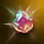

Gem Energy Fragments are a valuable in-game currency used to acquire and enhance powerful accessories. They play a key role in the progression system, particularly in obtaining and upgrading Epic Jewellery. This guide outlines how to acquire them, what items they can be exchanged for, and how the upgrade system functions.
How to Obtain Gem Energy Fragments
Players can acquire Gem Energy Fragments through the following activities:
 Raid Points: Earned by participating in raid boss battles.
Raid Points: Earned by participating in raid boss battles. Olympiad Store: Available in exchange for Olympiad points (Marks of Battle).
Olympiad Store: Available in exchange for Olympiad points (Marks of Battle).- Daily and Weekly Missions: Offered as rewards for completing specific objectives.
Redeeming Gem Energy Fragments
Gem Energy Fragments can be exchanged for Damaged Epic Jewellery at the Game Assistant. These items serve as a foundation for acquiring full Epic-grade accessories.
Damaged Epic Jewellery Available
| Damaged Core Ring | 25 Gem Energy Fragments | |
| Damaged Queen Ant's Ring | 25 Gem Energy Fragments | |
| Damaged Orfen's Earring | 35 Gem Energy Fragments | |
| Damaged Zaken's Earring | 40 Gem Energy Fragments | |
| Damaged Baium's Ring | 90 Gem Energy Fragments | |
| Damaged Frintezza Necklace | 125 Gem Energy Fragments | |
| Damaged Antharas Earring | 150 Gem Energy Fragments |
Additional Methods of Acquisition
In addition to direct redemption, players can obtain Damaged Epic Jewellery by participating in Epic Raid Bosses. Any player who deals at least 5,000 damage to an Epic Boss will automatically receive a piece of Damaged Jewellery via the in-game mail system after the encounter concludes.
Enhancing Damaged Epic Jewellery
Damaged Epic Jewellery can be equipped and provides moderate bonuses, with its effectiveness scaling based on enchantment level. However, its primary purpose is to serve as a stepping stone toward acquiring real Epic Jewellery. You can enchant Damaged Epic Jewels using Balthus Knight's Varnish, safely up to +3.
Enchant Success Rates:
| +1 to +3 | 100% | |
| +3 to +4 | 65% | |
| +4 to +5 | 50% | |
| +5 to +6 | 45% | |
| +6 to +7 | 40% | |
| +7 to +8 | 30% | |
| +8 to +9 | 20% | |
| +9 to +10 | 10% |
Upgrading Damaged Jewellery into Epic Jewellery
Players can attempt to upgrade Damaged Jewellery into full Epic-grade versions using Jeris’ Anvil in the Luxury Shop of Giran, a special crafting system available in the game. Each upgrade attempt is subject to a success rate based on the enchantment level of the Damaged item.
To initiate an upgrade attempt at Jeris' Anvil, players must meet the following conditions:
- The Damaged Jewellery must be enchanted to at least +7.
- A specific support accessory is required for each type (e.g., an Adamantite Ring is needed to upgrade a Damaged Core Ring).
- A certain amount of Adena must be paid as a crafting fee.